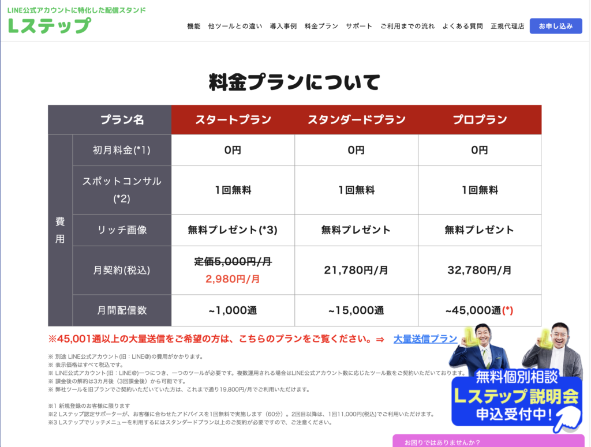
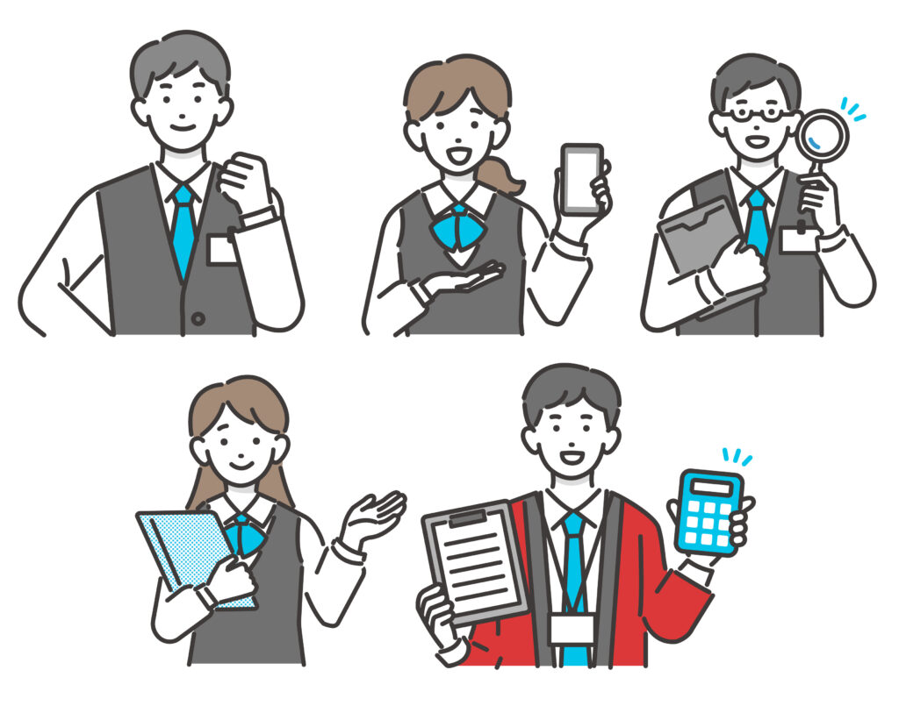

#045_知らないとヤバい！LINE公式アカウントとLステップ料金システムの落とし穴

最近、テレビでLINE公式アカウントやLステップのCMがよく流れていますね！今ではLINE公式アカウントを利用されている方や企業も目に見えて増え、専用アプリを導入されるようになりました。
まず、お店や各種サービス業などを運営されているのであれば、LINE公式アカウントの活用は必須です！決まった店舗がなくとも、予約システムや既存のWEBサイトなどと連携して活用されている事例も増えているので、今後もLINE公式アカウントの需要が見込まれています。
そして、LINE公式アカウントを利用するなら「Lステップ」の導入もおすすめしています！matsumotoが「Lステップ」をおすすめする理由はこちらの記事をご覧ください。今回は、LINE公式アカウントやLステップを導入する際に、一番気になる「料金システムの落とし穴」について解説していきたいと思います！
（１）LINE公式アカウントの料金システム
LINE公式アカウントの料金詳細はこちらから確認できます。
まず、LINE公式アカウント単体の料金システムはごくシンプル。LINE公式アカウントには３つのプランがあり、プラン内容は毎月上げたり下げたり自由に変更できます。
ここで、注意すべき点をご紹介します。

無料で1000通配信できる「フリープラン」から有料の「ライトプラン」や「スタンダードプラン」に変更する場合は、管理画面で変更すればすぐ反映され、料金は日割りで請求されます。
ただし、いったん有料プランに変更すると、また別のプランに変更したいと思っても月の途中でプラン変更することはできません（翌月の1日～適用）。
これの何が問題になるかというと、月の途中に配信数が不足した場合です。即時プランのアップグレードができないため、“追加メッセージ料金”が発生し、結果的に割高になってしまうのです。
このように、公式アカウントでどのような施策を打つのか、友だち数や事業規模などから計画的にプランを選ぶことが必要です。もし何かのキャンペーンを打つなど、大勢の友だちに向けて発信する場合は、前月のうちにアップグレードの手続きをしておきましょう！
（２）Lステップの料金システム
次に、Lステップの最新の料金詳細はこちら。
Lステップは、配信数と使える機能によってプランを選びます。どういった機能があって、どのプランが自分に合っているのか？最初はなかなか選ぶのが難しいと思いますので、不安な場合はLステップの無料個別相談や、個別アドバイスが得意なコンサルタント・matsumotoにご相談ください！あなたに最適なプランをご提案します。

Lステップは、どのプランを選んでも初月の利用料金は無料です（契約した翌月の同日から料金が発生）。ただ、Lステップを解約する場合は解約処理に3営業日掛かりますので、早目に申請するよう注意が必要です！
途中でプランを変更したい場合は、アップグレードであれば管理画面からいつでもでき、すぐに新しいプランの機能を利用することが出来ます。
ただし、“ダウングレードは出来ない”点には注意が必要！これ、意外と知らずに最初から高額なプランを申し込んでしまった方も多いそうで、「どうしたらいいのでしょうか」というご相談がたまにあります。
Lステップ側の言い分としては、ダウングレードしてプランを下げるということは、“これまで使えていた機能が使えなくなる“ ということになり、不具合の原因になるせいだそうなのですが、それなら最初にそう教えてほしいですよね。
なので、Lステップのプラン選びは慎重に行う必要があります。
微妙なラインで配信数が足りない場合などは、Lステップの機能であるセグメント機能を利用して ターゲットを厳選した配信をしましょう。それでもどうしても配信数が足りないと判断した時がアップグレードのタイミングになります。
（３）まとめ
LINE公式アカウントとLステップを始めて導入する際は、忙しくてごっちゃになってしまうかもしれませんが、料金システムに上記のような違いがありますので、注意が必要です。
月額でLINE公式アカウントの月額＋Lステップの費用がかかるのはもちろん、プラン選びには注意が必要です！

ただ、最初からLステップを導入しておけば、あらゆる作業を自動化すれば経費・人件費を削減でき、空いた時間も有効利用できるようになります。
「初めてなのでどのプランを選べばいいのか分からない」「Lステップの活用方法がよくわからない」という方は、ぜひmatsumotoにご相談ください！初回30分無料相談や、「SNS・WEB集客シート」「制作・運営チェックリスト」のプレゼントも行っております。